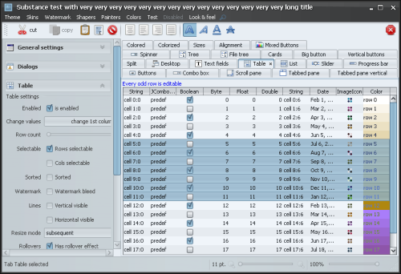

Menu bars, tool bars, status bars - these are common examples of special containers found in application windows. These containers create functional grouping of application controls and bring order to complex screens. Substance skinning layer provides a flexible and powerful set of APIs to define the visual appearance of these control groups - called decoration areas. At the same time, Substance decoration painters enforce visual consistency and connections across the components in related areas and states. In addition, Substance provides a set of published APIs for applications that wish to skin custom components and preserve visual consistency with the Swing controls painted by the core Substance UI delegates.
The org.pushingpixels.substance.api.DecorationAreaType
class contains the available core decoration area types. As a picture
is worth a thousand words, the following screenshots illustrate the
different decoration area types.
The following screenshot is the main Substance test application under the Business Black Steel skin (click to see full size version):
The next screenshot shows the title decoration area,
which in this example includes the title pane of the main window:
The next screenshot shows the header decoration area,
which in this example includes the menu bar of the main window:
The next screenshot shows the toolbar decoration area,
which in this example includes the tool bar of the main window:
The next screenshot shows the footer decoration area,
which in this example includes the status bar component from the
SwingX suite:
The next screenshot shows the general decoration area,
which in this example includes the task pane container
component from the SwingX suite:
Let's go back to the original screenshot:
It illustrates that the specific skin assigns different color schemes to different decoration areas. The controls in those areas get the background and foreground colors based on their assigned color scheme (without any custom application code), thus creating visual distinction between different application areas.
To use the matching decoration painter in custom painting routines of your application, call the following published Substance APIs:
SubstanceLookAndFeel.getCurrentSkin()
to retrieve the component skin.SubstanceSkin.getDecorationPainter()
to retrieve the decoration painter of the component skin.SubstanceLookAndFeel.getDecorationType()
to retrieve the decoration area type of the component.SubstanceDecorationPainter.paintDecorationArea()
(see below) to paint the decoration background on the specific graphics context.The base class for Substance decoration painters is
org.pushingpixels.substance.api.painter.decoration.SubstanceDecorationPainter.
The only painting method in this class is:
/**
* Paints the decoration area.
*
* @param graphics
* Graphics context.
* @param comp
* Component.
* @param decorationAreaType
* Decoration area type. Must not be <code>null</code>.
* @param width
* Width.
* @param height
* Height.
* @param skin
* Skin for painting the decoration area.
*/
public void paintDecorationArea(Graphics2D graphics, Component comp,
DecorationAreaType decorationAreaType, int width, int height,
SubstanceSkin skin);
The width and
height
parameters specify the rectangle to paint (the decoration
painters can only paint rectangular areas), the
skin specifies the Substance
skin to be used to compute the gradient colors, while
decorationAreaType
indicates the decoration area type.